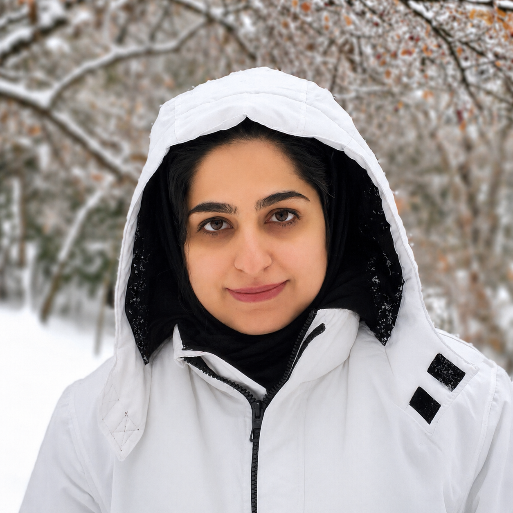

Human Motion Challenges in Real-World and Clinical Settings

+ Benchmark and Challenge on Parkinsonian Gait
A focused forum on human motion understanding under realistic constraints, bridging computer vision, biomechanics, digital health, and clinically grounded evaluation.
Timeline
- Paper submission opens
- Challenge opens
- Proceedings deadline
- Non-proceedings deadline
- Challenge closes
- MoCha workshop
About
Human motion understanding is central to computer vision, yet many models still degrade when motions diverge from the curated distributions seen in standard benchmarks. These gaps become even more pronounced in real-world settings, particularly in clinical contexts where subtle movement deviations can carry meaningful diagnostic value, but also extend to broader challenges such as realistic animation generation, coherent in-scene navigation, and physically plausible human–object interactions.
This workshop creates a meeting point for the broader community working on human-centric vision, long-term motion understanding, robust evaluation, and clinically grounded modeling, as well as those interested in applying human motion in any real-world application. The goal is to push the field beyond controlled benchmarks toward methods that remain reliable under real-world constraints.
Topics include:
- 3D Human Motion Generation in Real-World Contexts
- 3D pose and mesh reconstruction in unconstrained environments
- Long-term and longitudinal human motion understanding
- Efficient parametric human representations
- Motion representation learning and generative modeling
- Privacy-preserving human motion modeling in real-world contexts
- Learning under domain shift and cross-site generalization
- Fairness, reproducibility, generalization, and bias in human motion models
- Benchmark design for real-world human motion understanding
- Gait analysis and kinematic modeling
- Musculoskeletal and muscle-actuated humanoid modeling
Invited Speakers


Benchmark & Challenge
The workshop is paired with a benchmark and challenge on Parkinsonian gait built on CARE-PD, a large harmonized dataset of anonymized SMPL mesh gait sequences aggregated across nine cohorts and clinical centers. The proposed challenge uses CARE-PD as training data and evaluates performance on harmonized test sequences from three additional unseen sites. This setup is designed to reward methods that remain robust to real-world distribution shift and clinically realistic variability.
Submission
- Submissions to the challenge will be evaluated by submitting to the MoCha competition website (link to be announced). Entries will be ranked based on their performance on an unseen test set, using the Macro-F1 score as the primary evaluation metric. The top-performing teams will be selected according to the leaderboard rankings. The winners of the challenge have an opportunity to present their work as a spotlight and poster presentation during the workshop.
- Participants in the challenge may also submit a corresponding paper; however, all paper submissions must adhere to the official workshop paper submission deadlines. The challenge leaderboard submission will remain open for competition entries until the designated competition deadline.
- One First Place Award (€1,000) and one Runner-Up Award (€500), generously sponsored by Machine Medicine Technologies, will be granted to the top-performing teams.
- For participation instruction details see this page.
Challenge important dates:
- CARE-PD data has already been released for model development and training here
- Challenge leaderboard submission opens: May 31
- Challenge leaderboard submission closes: August 15
- Winner announcement on website: August 18
All deadlines are end-of-day Anywhere on Earth (AOE).
Call for Papers
We invite Full Paper, Short Paper and Extended Abstract submissions. The covered topics include, but are not limited to:
- 3D human pose, and mesh modeling in unconstrained environments
- Human motion understanding in real-world and in-the-wild settings
- Long-term, temporal, and longitudinal motion modeling
- Motion representation learning and generative modeling
- Benchmark design and evaluation for real-world motion understanding
- Gait analysis, motion biomarkers, and clinical motion modeling
- Human motion for healthcare, rehabilitation, and assistive technologies
Submission Track 1: Proceedings Track (Full paper only)
We accept novel full papers for publication in the proceedings.
Full papers are limited to 14 pages, including figures and tables, in the ECCV style. Additional pages containing only cited references are allowed. Appendices are counted towards the eight-page limit or should be moved to the supplementary document.
The accepted full-paper submissions will appear in the ECCV workshops proceedings. Accepted papers will be invited for poster/oral presentation and will be displayed on the workshop website.
Important dates (Track 1)
- Submission deadline:
July 1July 8 (23:59 AOE) - Notification date:
July 18July 25 (23:59 AOE) - Camera-ready deadline: August 3 (23:59 AOE)
Submission Track 2: Non-Proceedings Track (Full paper - Short paper - Extended abstract)
The Non-Proceedings Track provides a flexible venue for presenting a broad range of work in a non-archival format.
We invite submissions of extended abstracts (2–4 pages), short papers (4–7 pages), and full papers (up to 14 pages). Submissions may include novel or previously published work and should follow the ECCV style.
Accepted submissions of Track 2 will NOT be included in the ECCV workshop proceedings, but will be invited for poster/spotlight presentation and will be displayed on the workshop website.
Important dates (Track 2)
- Submission deadline: July 23 (23:59 AOE)
- Notification date: Aug 15 (23:59 AOE)
Submission Guidelines
- All papers must be submitted via the ECCV 2026 OpenReview workshop website.
- Submissions should be PDF format and follow the official ECCV 2026 Author Kit and ECCV 2026 author guidelines.
- The reviewing process is single-stage without rebuttals.
- Authors may upload optional supplementary materials, containing additional details, videos, images, etc.
- Papers should follow the ECCV author guidelines and be anonymized for double-blind review.
- The accepted papers will be presented as oral, or poster presentations.
- A Best Paper Award (€500), generously sponsored by Machine Medicine Technologies, will be granted to the most outstanding contributions, selected based on originality, technical merit, and potential impact from the accepted papers.
Schedule
Organizers


Maryam Mirian
University of British Columbia

Atefeh Irani
University of Tehran

Sponsored by
Interested in sponsoring our workshop? Please email us at mocha.eccv@gmail.com.